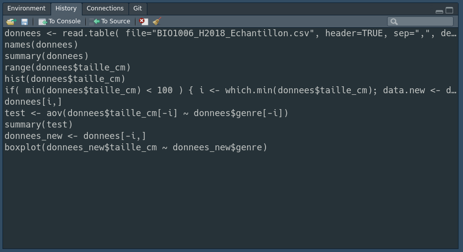
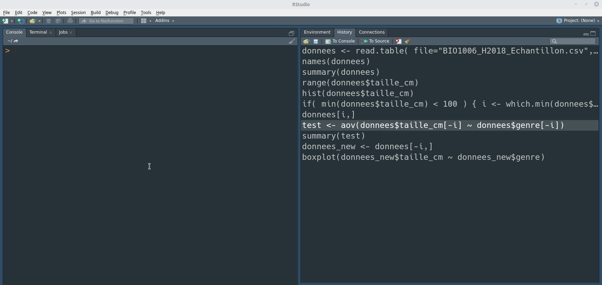
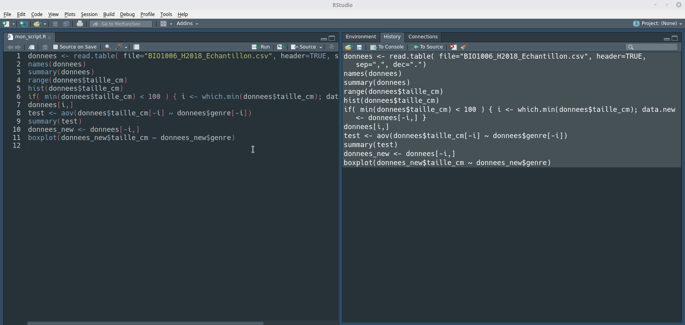
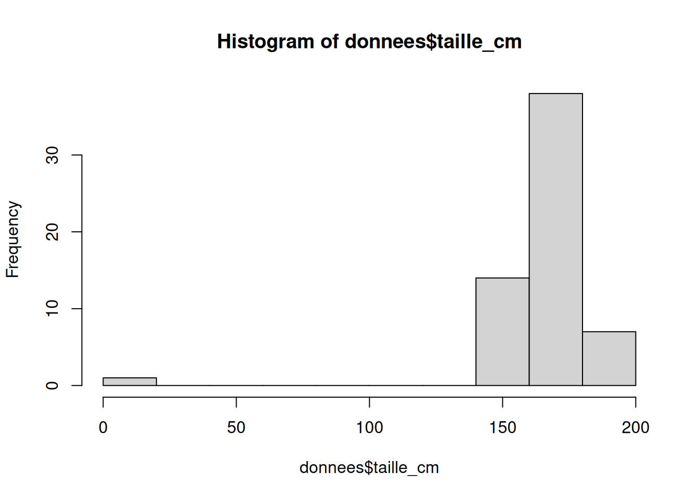
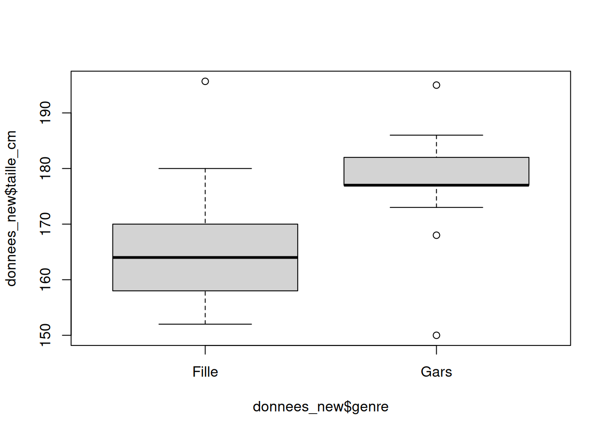
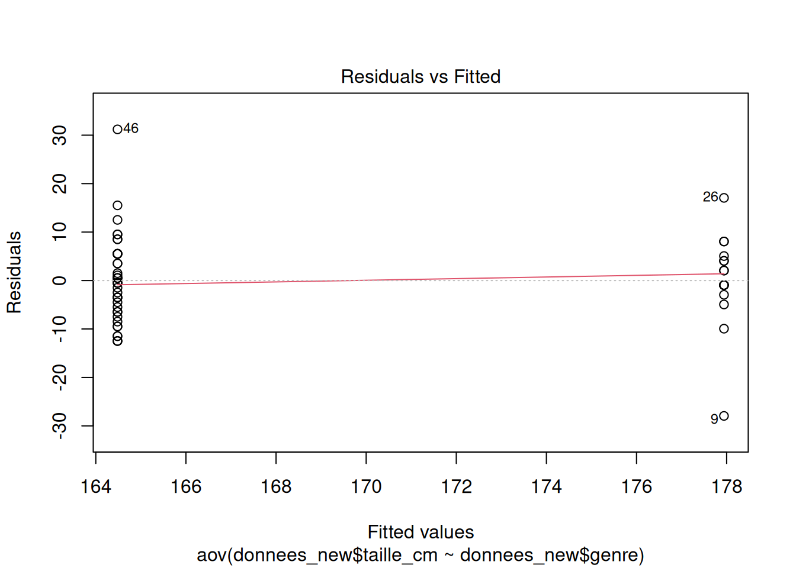
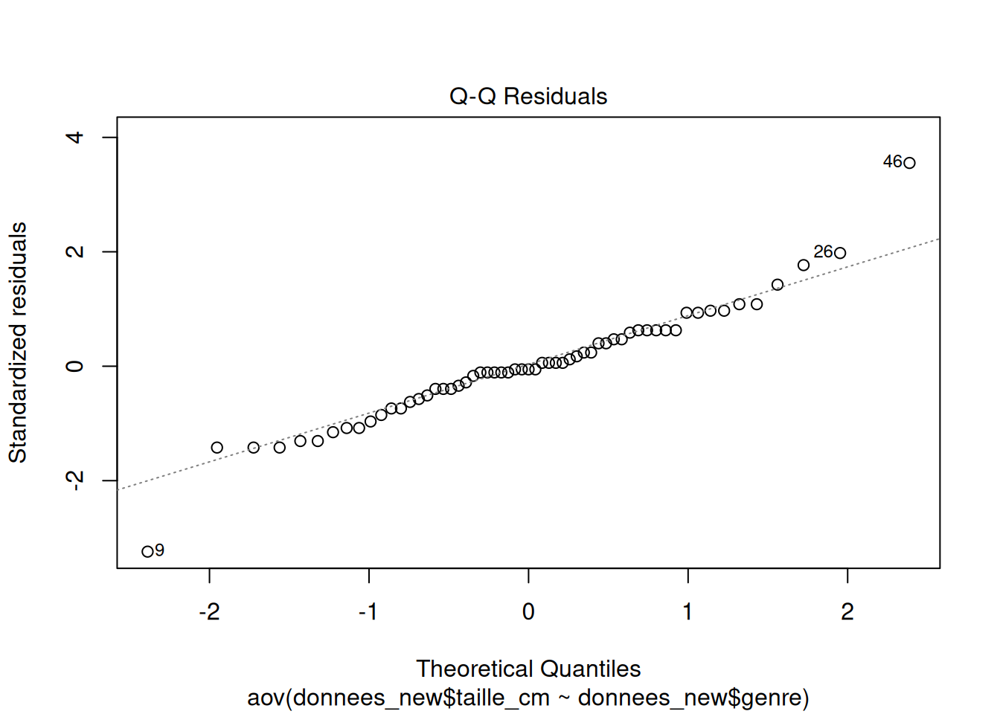
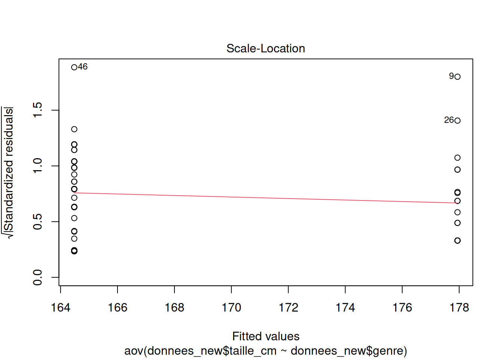
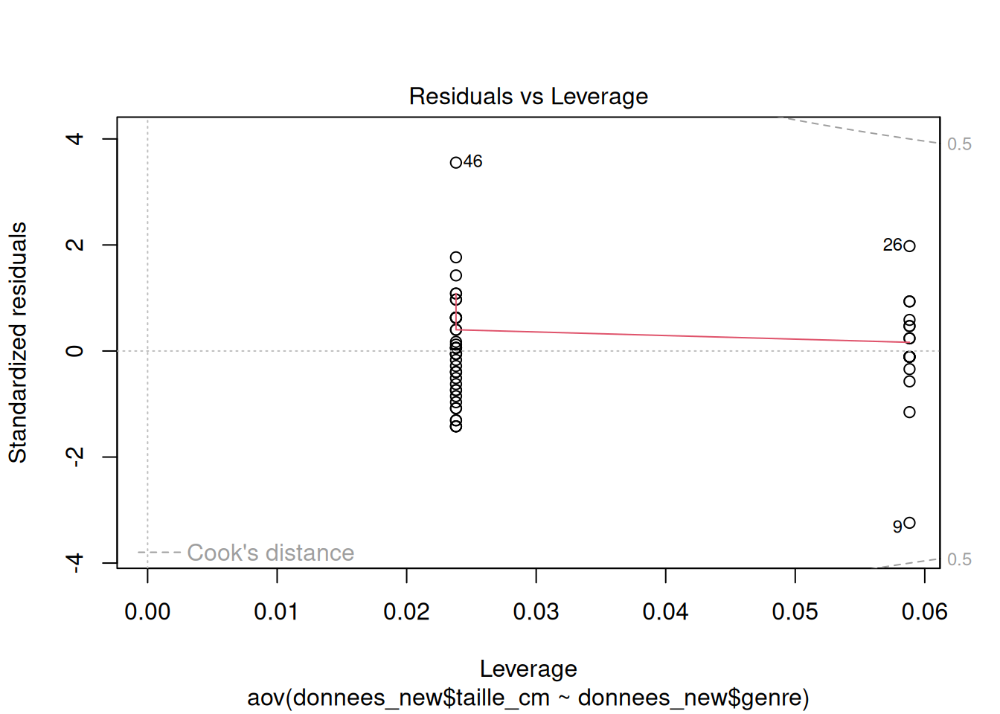

Capsule 5
Objectifs de la capsule
À la fin de cette capsule, vous serez en mesure de:
- Comprendre ce qu’est un script et son utilité
- Comprendre la trinité du bon script: clair, organisé et commenté
- Optimiser l’utilisation des panneaux de l’interface Rstudio.
Capsule vidéo
Télécharger le script R de la vidéo (Faire bouton droit -> enregistrer sous…)
Exercices
Veuillez noter qu’il est possible d’avoir plus d’une bonne réponse par question. Vous pouvez reprendre chaque exercice grâce aux boutons “Start Over” ou “Try Again” Le bouton “hint”” est là pour être utilisé!
Les scripts dans R
Modifier le code suivant pour qu’il fonctionne correctement.
Indice
Le charactère # est utilisé pour commenter du code en R. Les ligne de texte qui suivent un # ne seront pas exécutées.
Solution
# Générer 100 nombres aléatoirement
x <- rnorm(100)
# Calculer la moyenne du vecteur x
mean(x)[1] -0.05766148Matériel accompagnateur
Création d’un script
Afin d’optimiser son travail dans R et de s’assurer au maximum de sa reproductibilité par quelqu’un d’autre, ou par soi-même dans le futur, le script est un outil essentiel! Un script R est simplement un fichier texte portant l’extension .R et peut être vu comme une recette: il regroupe, dans un ordre logique et précis, les différentes étapes à exécuter pour réaliser un ensemble de tâches dans le but d’obtenir un résultat identique à chaque fois.
Ainsi, un script permet d’organiser son travail, de le commenter, de le compléter de façon itérative et même de détecter facilement certaines erreurs.
Supposons les commandes R suivantes qui auraient été tapées dans la console pour explorer les résultats du sondage effectué dans le cours de biostatistiques BIO-1006 du programme de baccalauréat en Biologie de l’Université Laval.
donnees <- read.table(file = "BIO1006_H2018_Echantillon.csv", header = TRUE, sep = ",", dec = ".")
names(donnees)
summary(donnees)
range(donnees$taille_cm)
hist(donnees$taille_cm)
if (min(donnees$taille_cm) < 100) {
i <- which.min(donnees$taille_cm)
data.new <- donnees[-i, ]
}
donnees[i, ]
test <- aov(donnees$taille_cm[-i] ~ donnees$genre[-i])
summary(test)
donnees_new <- donnees[-i, ]
boxplot(donnees_new$taille_cm ~ donnees_new$genre)Dans RStudio, l’historique de ces commandes est affiché dans la fenêtre History.

À ce stade, ces commandes ne font pas encore partie d’un script R. Pour créer un script à partir de notre historique de commandes:
- Créer un nouveau script (File -> New File -> R Script).
- Sélectionner les commandes de l’historique que nous désirons envoyer dans le script.
- Cliquer sur le bouton To Source pour copier les commandes dans le script qui été créé.
- Sauvegarder le script dans un fichier portant l’extension .R. Comme pour les noms de variables, il est important de choisir un nom de fichier représentatif. Cela vous aidera à vous retrouver lorsque votre projet contiendra plusieurs scripts. Par exemple, ici un bon choix aurait pu être
exploration_sondage_bio1006.R.

Indentation du code
Indenter correctement le code d’un script fait partie des bonnes pratiques que vous devriez mettre en oeuvre lorsque vous développez du code R. Bien que l’indentation ne soit pas nécessaire d’un point de vue technique, elle vous aidera à mieux lire votre code et vous permettra de repérer les erreurs potentielles.
Astuce
Un bon style de codage équivaut à utiliser une ponctuation correcte. Vous pouvez vous en passer, mais cela rend les choses plus faciles à lire.1
Dans l’exemple qui suit, on constate que la deuxième version est plus facile à lire, voire à comprendre!
# Fonctionne, mais plus difficile à lire
average <- mean(feet / 12 + inches, na.rm = TRUE)
# Le code est maintenant plus aéré, ce qui facilite sa lecture
average <- mean(feet / 12 + inches, na.rm = TRUE)Reprenons le bloc de code lié à l’exploration des données du sondage.
donnees <- read.table(file = "BIO1006_H2018_Echantillon.csv", header = TRUE, sep = ",", dec = ".")
names(donnees)
summary(donnees)
range(donnees$taille_cm)
hist(donnees$taille_cm)
if (min(donnees$taille_cm) < 100) {
i <- which.min(donnees$taille_cm)
data.new <- donnees[-i, ]
}
donnees[i, ]
test <- aov(donnees$taille_cm[-i] ~ donnees$genre[-i])
summary(test)
donnees_new <- donnees[-i, ]
boxplot(donnees_new$taille_cm ~ donnees_new$genre)On constate que le code est très compact et difficile à lire. Heureusement, RStudio peut nous aider à indenter correctement ce bloc de code. Pour ce faire, il suffit de sélectionner les lignes de code à indenter et d’utiliser la combinaison de touches Ctrl + Shift + A.

Le code nouvellement formaté devrait ressembler à ceci.
donnees <-
read.table(
file = "BIO1006_H2018_Echantillon.csv",
header = TRUE,
sep = ",",
dec = "."
)
names(donnees)
summary(donnees)
range(donnees$taille_cm)
hist(donnees$taille_cm)
if (min(donnees$taille_cm) < 100) {
i <- which.min(donnees$taille_cm)
data.new <- donnees[-i, ]
}
donnees[i, ]
test <- aov(donnees$taille_cm[-i] ~ donnees$genre[-i])
summary(test)
donnees_new <- donnees[-i, ]
boxplot(donnees_new$taille_cm ~ donnees_new$genre)Commenter le code
Les commentaires sont essentiels et rendent le code plus clair. Il est donc très important de commenter votre code afin de garder une trace de ce qui a été fait. Dans R, un commentaire est une ou plusieurs lignes de texte ignorée(s) lors de l’exécution du script.
Dans R, un commentaire est une ou plusieurs séquences de texte ignorée(s) lors de l’exécution du script qui débute par le signe #. Tout ce qui suit ce signe sera donc ignoré lors de l’exécution. Un commentaire peut soit être placé en haut ou à droite d’une ligne de commande.
# Ceci est une ligne de commentaire et ne sera pas exécuté
x <- 2
x <- 2 # Ceci est aussi un commentaire.Un commentaire devrait posséder les caractéristiques suivantes:
- Faciliter la lecture du code.
- Justifier certains choix qui ne seraient pas évidents (ex.: suppression de valeurs aberrantes).
- Donner un exemple pour permettre de mieux comprendre ce que fait le code.
- Être concis et ne pas décrire une évidence.
- Clarifier certaines sections complexes du code. C’est d’ailleurs une indication que votre code est peut-être trop complexe et mériterait d’être revu.
En appliquant ces recommandations générales, le code d’exploration des données du sondage du cours biostasitiques devient plus clair.
# Étape 1: Lire le fichier de données (voir capsule #4) Il s'agit du résultat
# d'un sondage dans une classe d'étudiants de biostatistiques
donnees <- read.table(file = "../data/BIO1006_H2018_Echantillon.csv", header = TRUE, sep = ",", dec = ".")
# Étape 2: Vérifier les types de données et leurs valeurs (voir capsule #2) On
# remarque une valeur aberrante pour la taille en cm des individus!
summary(donnees) couleur_yeux taille_cm nombre_choisi cours_par_session
Length:60 Min. : 1.53 Min. : 0.0 Min. :3.000
Class :character 1st Qu.:160.75 1st Qu.: 7.0 1st Qu.:4.000
Mode :character Median :167.00 Median :17.0 Median :5.000
Mean :165.58 Mean :28.1 Mean :4.683
3rd Qu.:177.00 3rd Qu.:42.0 3rd Qu.:5.000
Max. :195.68 Max. :99.0 Max. :6.000
peur_des_biostats piece_monnaie genre
Length:60 Length:60 Length:60
Class :character Class :character Class :character
Mode :character Mode :character Mode :character
range(donnees$taille_cm)[1] 1.53 195.68# Étape 3: Faire un histogramme pour voir la distribution de fréquence des ces
# valeurs numériques (voir capsule #6)
hist(donnees$taille_cm)
# Étape 4: Identifier l'indice de la taille minimale SI elle est INFÉRIEURE à
# 100 cm, puis supprimer cette valeur des futures analyses
if (min(donnees$taille_cm) < 100) {
# Retrouver l'indice de la valeur aberrante
i <- which.min(donnees$taille_cm)
# Créer un nouveau "data frame" sans les valeurs correspondantes
donnees_new <- donnees[-i, ]
}
# Étape 5: Faire une comparaison de moyennes entre les valeurs de tailles selon
# le facteur "genre"
# Boxplot exploratoire des données
boxplot(donnees_new$taille_cm ~ donnees_new$genre)
# analyse de variance
res.anova <- aov(donnees_new$taille_cm ~ donnees_new$genre)
# Visualisation des résultats de l'anova
summary(res.anova) Df Sum Sq Mean Sq F value Pr(>F)
donnees_new$genre 1 2192 2192 27.76 2.19e-06 ***
Residuals 57 4502 79
---
Signif. codes: 0 '***' 0.001 '**' 0.01 '*' 0.05 '.' 0.1 ' ' 1# Vérification visuelle des conditions d'application du test
plot(res.anova)



Téléchargement
Le matériel pédagogique utilisé dans cette capsule est disponible pour le téléchargement sous deux formats différents:
- Format PDF standard que vous pouvez consulter et commenter avec Adobe Reader par exemple.
- Format HTML dynamique qui se comporte comme une page web et doit être lu avec votre navigateur préféré (Chrome, Firefox, Edge, Safari, etc.).
Pour télécharger le fichier localement sur votre ordinateur, tablette ou téléphone portable, il suffit de cliquer sur le lien désiré avec le bouton droit de votre souris et choisir “sauvegarder sous…”.
Notes de bas de page
http://r-pkgs.had.co.nz/style.html↩︎